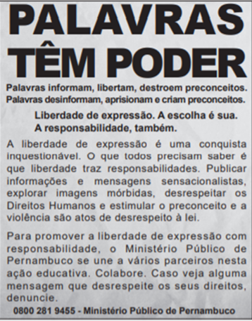

1º Desafio
Questão 1/10:
Pela análise do conteúdo, constata-se que essa campanha publicitária tem como função social:
(a) propagar a imagem positiva do Ministério Público.
(b) conscientizar a população que direitos implicam deveres.
(c) coibir violações de direitos humanos nos meios de comunicação.
(d) divulgar políticas sociais que combatem a intolerância e o preconceito.
(e) instruir as pessoas sobre a forma correta de expressão nas redes sociais.